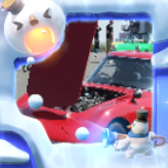
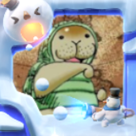
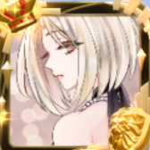
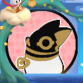
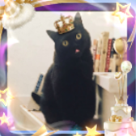
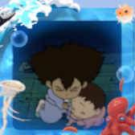

兵器工場 作戦シート
① 誰がどこへ行くか

i130(中継所兼)

ガパ爺
指揮官★ヨルカ
★タケノコ
ちょろゴン
ヒデキ基本戦略
このマップは自陣＝左側のSafe zoneで作成。
Safe zoneが左右逆になる場合は、配置位置（担当施設・玉拾いゾーン）を左右反転させること。
兵器工場 作戦シート
② 行軍の出し先と動き方行軍配分表（6部隊）
出し方：①は自分の担当施設へ。②③は試験場の増援、④は近くの施設。⑤は味方の集結に乗る（終盤は王室集結へ）。⑥は採集（武器工房が出る20分以降。それまでは他の施設へ）。施設が満員の時は近くの自陣施設か採集へ。開幕は集結せず全員単騎で担当施設へ入る。いとちの①は第2フェーズ開放まで集結参加。控えの2名は欠員が出たら入る。採取班（B kaho・D ガパ爺）は①②③を集結に乗せ（20分以降も続ける）、④⑤⑥で20分から武器工房を採集。敵の強い人が近くに来たら近くの仲間と2〜3連で倒す。玉拾い班の⑤⑥は担当ゾーンの施設に駐屯（各施設6人の駐屯・集結を確保するため、20分以降もそのまま）。タケノコ・いとち・まのり・miraの⑥も施設へ。玉拾い班（4人。i130は中継所と兼任）は集結に乗らない。名前の横のA〜Dは担当ゾーン（1枚目マップで色分けしたエリア）。奪還の集結が出たら落ちる施設の近くで待機し、割れた直後に拾って即帰還。
指揮官がやること
ヨルカ：出欠確認・欠員は控えを投入。Safe zoneの左右を確認し、逆なら「配置を左右反転」と号令
開幕「全員単騎で施設へ」の号令（ちょろゴン→試験場2、タケノコ→試験場1）。拠点集結の合図。担当なしの修理2・4が④で取れたか確認。戦況を宣言し2〜3連を指示
0:02 施設の色（初回）確認／0:18〜0:20 倉庫集結・武器工房の場所共有（採集は20分から）／0:45 王室本番（ちょろゴン・ヒデキ）／残り5分「無理しない」
こんな時はこう動く
試験場2つの防衛が最優先。敵寄りの修理工場は取られてもOK
ちょろゴンとヒデキで敵の試験場へ同時着弾。装備の入れ替えを封じる
相手の都市はガラ空き。ちょろゴン・いとちで都市攻撃、着弾前に戻る
試験場を連弾でリセットし続ける。採集と玉拾いを取り切る
全員共通ルール
- 集結は1分。埋め切りたい時だけ2〜3分。5分集結は使わない
- 駐屯は施設から4マス以上・画面外（集結主は施設真横でも可）
- 施設を落とす前・割れる前は必ず戦場チャットへ座標シェアして声掛け
- 玉は飛んだ後に拾い、拾ったら即駐屯位置へ戻る
- 複数施設に駐屯中は着弾前に装備を入れ替え
- 玉拾い班は集結に乗らず、奪還で散った玉を拾う
- 採取班は近くに敵の強い人が来たら2〜3連で倒す
- 怖い人は安全地帯から援護でOK
- Safe zoneが左右逆の時は、配置位置を左右反転（左側の担当は右側へ、右側の担当は左側へ）
兵器工場 作戦シート
役割別の流れ（自分の役割の列だけ見ればOK）開幕に第2試験場を取ったら抜けて、奪還・都市攻撃・王室を担当
第2試験場へ移転単騎で入る。占領（約2分）で取れたら抜けて遊軍へ（駐屯は第2試験場リーダーに任せる）
相手が集結を出したら都市攻撃、着弾前に戻る。負けている時は敵の試験場へ同時着弾
開放前に王室の近くへ移転→開放と同時に単騎・加速で初回9,000だけ取る
試験場2つを守る。負けている時は同時着弾
王室へ集結を立てる。全員の⑤が乗る。取ったら最後まで守る
担当施設を移転単騎で取り、駐屯の旗持ちとして守る
担当施設へ移転単騎・加速で入り初回を取る。色が変わるまで離れない（ボイラーを取ると以後の支配は約1分）
施設の色を確認。第2試験場リーダーは主力から駐屯リーダーを引き継ぐ
旗持ちとして駐屯を守る。落とす前・割れる前は戦場チャットへ座標シェア。敵寄りの修理工場は強敵なら譲ってOK
兵器倉庫の担当：開放1〜2分前に1分集結を出せる位置へ→開放と同時に倉庫へ集結し、そのまま守る
駐屯を守り、⑤を王室集結に乗せる
序盤は集結に乗り、武器工房が出たら採集へ。敵の強い人には2〜3連
開幕は移転駐屯で近くの施設へ。以後①②③は集結に乗る、④⑤⑥は待機
敵の強い人が近くに来たら、近くの仲間と2〜3連で倒す
④⑤⑥で武器工房を採集（①②③は集結を続ける）。工房はランダムな場所に出る。近くの人が行く
武器工房の採集を続ける
集結に乗っている行軍で王室集結へ
集結に乗らず、割れた拠点から飛ぶ玉を拾って即帰還
①〜④は担当ゾーンの拠点から少し離れた、採集が出そうな場所へ移転して待機。⑤⑥は担当ゾーンの施設に駐屯
奪還の集結が出たら落ちる施設の少し離れた場所で待つ。割れた直後に拾って即帰還。強敵には2〜3連
⑤⑥は駐屯を続ける
玉拾いを続けて取り切る
集結には乗らず、王室・施設が割れて飛ぶ玉を拾う（指揮官の指示があれば従う）